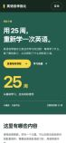
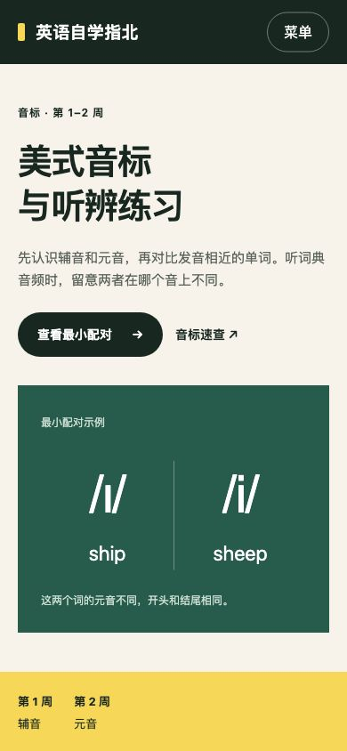
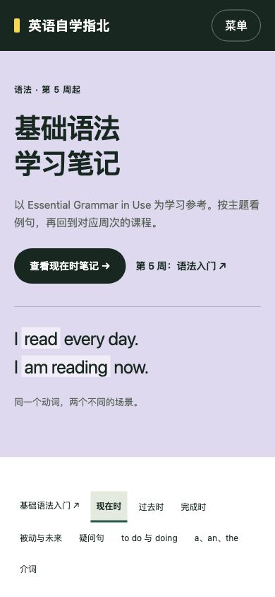
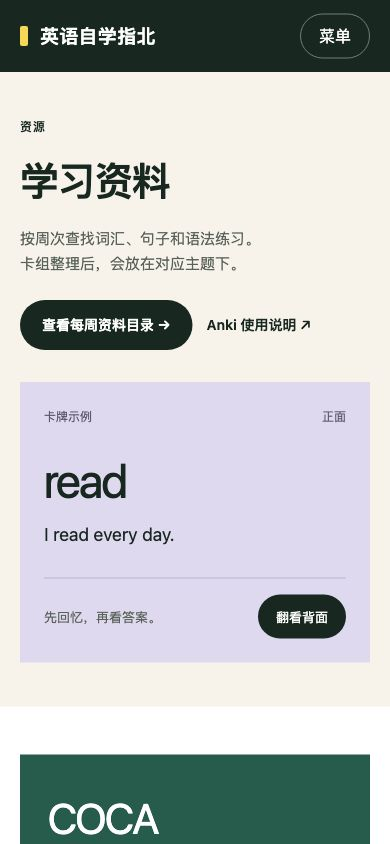
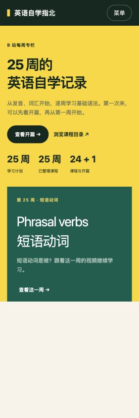
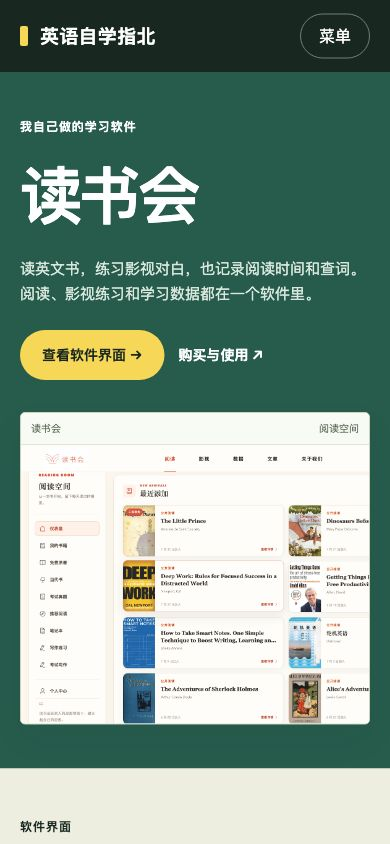

第二版 · 2026.10.06
点击图片查看整页设计，也可以打开预览试用页面里的按钮。

25 周学习计划、学习方法与每周安排。

最小配对、音标速查与听辨练习。

按主题切换笔记，对照例句和对应课程。

按周次、主题和类型查找资料。

25 条课程记录，支持搜索、筛选和排序。

读书会的阅读、影视、数据与购买信息。
完整 UI 图与可编辑 HTML 均已保存。第 24、25 周已加入视频链接；其余课程链接、资料文件和软件购买信息待补充。